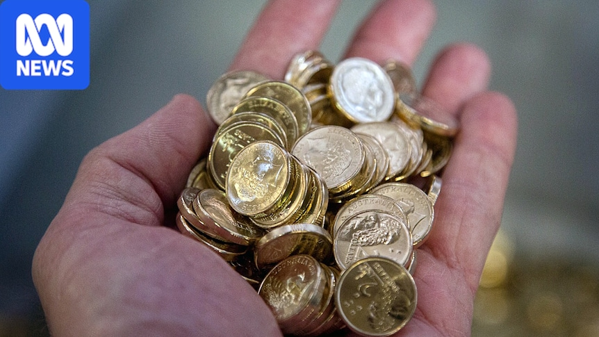
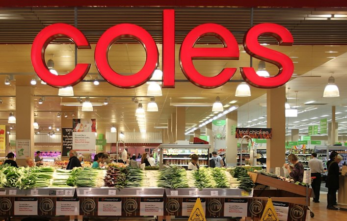

01 / EXECUTIVE BRIEF
What matters now
02 / SECTOR INTELLIGENCE
Signals across the board
Financials
Major banks benefit from elevated cash rates and sticky deposit spreads despite slowing credit expansion.
Implication: Short-term earnings resilience for CBA.AX, NAB.AX, WBC.AX, and ANZ.AX; longer-term headwinds from rising mortgage arrears.
Consumer Staples & Discretionary
Sharp bifurcation between defensive staples and discretionary retail; Coles loses market share to Woolworths.
Implication: Favor WOW.AX over COL.AX; maintain underweight stance on consumer discretionary amid tightening household budgets.
Real Estate (REITs)
Auction clearance rates fall to multi-year lows as Sydney home values drop 10% in under eight months.
Implication: Downward valuation pressure on residential REITs and property developers; debt servicing risks rise.
Energy & Utilities
Middle East geopolitical friction and domestic gas market constraints create supply-side price pressure.
Implication: Constructive backdrop for upstream producers WDS.AX and STO.AX, though domestic policy interventions remain a risk.
Materials / Mining
Speculative junior gold and critical minerals exploration gains attention while iron ore sentiment faces macro headwinds.
Implication: Defensive tier-one miners like BHP.AX and RIO.AX offer balance sheet protection over high-cost juniors.
03 / RISK ASSESSMENT
Known downside
RBA Overtightening and Household Squeeze
Underweight consumer discretionary and cyclical retail; overweight cash-generative staples and infrastructure.
Housing Market Downturn & Asset Quality Deterioration
Limit exposure to residential development REITs; monitor bank mortgage provisioning closely.
Geopolitical Energy Shock and Domestic Gas Shortages
Hold energy producers with unhedged upstream volume exposure (WDS.AX, STO.AX).
Iron Ore Demand Fluctuations
Prioritize low-cost producers (BHP.AX, RIO.AX) with diversified mineral revenue streams.
04 / POSITIONING
Portfolio responses
Opportunities
Pairs Trade: Long WOW.AX / Short COL.AX
Woolworths is winning grocery market share while Coles faces execution issues and market capitalization erosion.
Overweight Upstream Oil & Gas Producers
Geopolitical standoff in Iran and Australian domestic supply deficits support realized hydrocarbon prices.
Selective Large-Cap Financial Exposure
Major banks continue harvesting wide net interest margins from high deposit balances.
Defensive
Underweight Consumer Discretionary and Retail REITs
Consumer spending contraction and falling home values pose continuing threats to discretionary revenues.
Allocate to Bond Duration and AUD Hedges
Provide downside insurance against domestic growth deceleration and residential property corrections.
05 / OUTLOOK
The road ahead
1—3 MONTHS
ASX 200 likely to remain range-bound near term as bank strength balances retail and real estate softness.
6—12 MONTHS
A multi-speed economic environment where defensive yields, quality energy assets, and low-cost miners outperform domestic cyclicals.
Key catalysts
Watch list
06 / SOURCE INTELLIGENCE
Reporting behind the view
Albanese flies to Caribbean for summit as households brace for rate pain
VIEW STORY ↗
Banks sitting on billions in savers' money as interest rates rise
VIEW STORY ↗